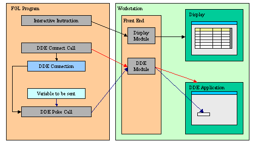

Back to Contents
Summary:
See also:
Built-in Functions.
DDE is a form of inter-process communication implemented by Microsoft
for Windows platforms. DDE uses shared memory to exchange data between applications.
Applications can use DDE for one-time data transfers, and for ongoing exchanges
in applications that send updates to one another as new data becomes available.
Please refer to your Microsoft documentation for DDE compatibility between
existing versions. As an example, DDE commands were changed between Office 97
and Office 98.
With DDE Support, you can invoke a Windows application and send data to or receive
data from it. To use this functionality, the program must use the Windows
Front End.
Before using the DDE functions, the TCP communication channel between the
application and the front end must be established with a display
(OPEN WINDOW, MENU, DISPLAY TO).

The DDE API is used in a four-part procedure, as described in the following
steps:
- The application sends the Front End the DDE order using the TCP/IP
channel.
- The Front End executes the DDE order and sends the data to the Windows
application through the DDE API.
- The Windows application executes the command and sends the result, which
can be data or an error code, to the Front End.
- The Windows Front End sends back the result to the application using
the TCP/IP channel.
A DDE connection is uniquely identified by two values: The name of the DDE
Application and the document. Most DDE functions require these two values to
identify the DDE source or target.
The DDE API is based on the front call technique described in Front
End Functions. All DDE functions are grouped in the WINDDE front end
function module.
| Function name |
Description |
| DDEConnect |
This function opens a DDE connection |
| DDEExecute |
This function executes a command in the specified program |
| DDEFinish |
This function closes a DDE connection |
| DDEFinishAll |
This function closes all DDE connections, as well as the DDE server program |
| DDEError |
This function returns
DDE error information about the last DDE operation |
| DDEPeek |
This function retrieves data from the specified
program and document using the DDE channel |
| DDEPoke |
This function sends data to the specified program and document using the DDE channel |
Purpose:
This function opens a DDE connection.
Syntax:
CALL ui.Interface.frontCall("WINDDE","DDEConnect",
[ program, document, encoding ], [result]
)
Notes:
- program is the name of the DDE application.
- document is the document that is to be opened.
- encoding is an optional parameter. It allows to force the encoding to use between ASCII and wide char/unicode. When not specified, WinDDE will try to retrieve the correct encoding by itself. Possible values are: "UNICODE", "ASCII"
- result is an integer variable receiving the status.
- result is TRUE
if the function succeeded,
FALSE otherwise.
- If the function failed, use DDEError to get the
description of the error.
Warnings:
- If the function failed with "DMLERR_NO_CONV_ESTABLISHED", then
the DDE application was probably not running; use execute
or shellexec front call to start the
DDE application.
- In Microsoft Office 2010, the use of DDE is disabled by default. You need to uncheck "Ignore
other applications that use Dynamic Data Exchange(DDE)" in advanced options, otherwise DDEConnect will fail.
Purpose:
This function executes a DDE command.
Syntax:
CALL ui.Interface.frontCall("WINDDE","DDEExecute",
[ program, document, command, encoding
], [result] )
Notes:
- program is the name of the DDE application.
- document is the document that is to be used.
- command is the command that needs to be executed.
- encoding is an optional parameter. It allows to force the encoding to use between ASCII and wide char/unicode. When not specified, WinDDE will try to retrieve the correct encoding by itself. Possible values are: "UNICODE", "ASCII"
- Refer to the program
documentation for the syntax of command.
- result is an integer variable receiving the status.
- result is TRUE
if the function succeeded,
FALSE otherwise.
- If the function failed, use DDEError to get the
description of the error.
Warnings:
- The DDE connection must be opened; see DDEConnect.
Purpose:
This function closes a DDE connection.
Syntax:
CALL ui.Interface.frontCall("WINDDE","DDEFinish",
[ program, document ], [result] )
Notes:
- program is the name of the DDE application.
- document is the document that is to be closed.
- result is an integer variable receiving the status.
- result is TRUE
if the function succeeded,
FALSE otherwise.
- If the function failed, use DDEError to get the
description of the error.
Warnings:
- The DDE connection must be opened,
see DDEConnect.
Purpose:
This function closes all DDE connections as well as the DDE server program.
Syntax
CALL ui.Interface.frontCall("WINDDE","DDEFinishAll",
[], [result] )
Notes:
- Closes all DDE connections.
- result is an integer variable receiving the status.
- result is TRUE
if the function succeeded,
FALSE otherwise.
Purpose:
This function returns the error information about the last DDE operation.
Syntax:
CALL ui.Interface.frontCall("WINDDE","DDEError",
[], [errmsg] )
Notes:
- errmsg is the error message. It is set to NULL if no error occurred.
Purpose:
This function retrieves data from the specified program and document using the DDE channel.
Syntax:
CALL ui.Interface.frontCall("WINDDE","DDEPeek",
[ program, container, cells, encoding ],
[ result, value ] )
Notes:
- program is the name of the DDE application.
- container is the document or sub-document that is to be used.
A
sub-document can, for example, be a sheet in Microsoft Excel.
- cells represents the working items;
see the program
documentation for the format of cells.
- encoding is an optional parameter. It allows to force the encoding to use between ASCII and wide char/unicode. When not specified, WinDDE will try to retrieve the correct encoding by itself. Possible values are: "UNICODE", "ASCII"
- value represents the data to be retrieved;
see the program documentation for the format of values.
- result is an integer variable receiving the status.
- result is TRUE
if the function succeeded,
FALSE otherwise.
- If the function failed, use DDEError to get the
description of the error.
- value is a variable receiving the cells values.
Warnings:
- The DDE connection must be opened;
see DDEConnect.
- DDEError can only be called
once to check if an error occurred.
Purpose:
This function sends data to the specified program and document using the DDE channel.
Syntax:
CALL ui.Interface.frontCall("WINDDE","DDEPoke",
[ program, container, cells,
values, encoding ], [result] )
Notes:
- program is the name of the DDE application.
- container is the document or sub-document that is to be used.
A
sub-document can, for example, be a sheet in Microsoft Excel.
- cells represents the working items;
see the program
documentation for the format of cells.
- values represents the data to be sent;
see the program
documentation for the format of values.
- encoding is an optional parameter. It allows to force the encoding to use between ASCII and wide char/unicode. When not specified, WinDDE will try to retrieve the correct encoding by itself. Possible values are: "UNICODE", "ASCII"
- result is an integer variable receiving the status.
- result is TRUE
if the function succeeded,
FALSE otherwise.
- If the function failed, use DDEError to get the
description of the error.
Warnings:
- The DDE connection must be opened;
see DDEConnect.
- An error may occur if you try to set many (thousands of) cells in a
single operation.
dde_example.per
01 DATABASE formonly
02 SCREEN
03 {
04 Value to be given to top-left corner :
05 [f00 ]
06 Value found on top-left corner :
07 [f01 ]
08 }
09 ATTRIBUTES
10 f00 = formonly.val;
11 f01 = formonly.rval, NOENTRY;
dde_example.4gl
01 MAIN
02
03 CONSTANT file = "Sheet1"
04 CONSTANT prog = "EXCEL"
05 DEFINE val, rval STRING
06 DEFINE res INTEGER
07 OPEN WINDOW w1 AT 1,1 WITH FORM "dde_example.per"
08 INPUT BY NAME val
09 CALL ui.Interface.frontCall("WINDDE","DDEConnect", [prog,file], [res] )
10 CALL checkError(res)
11 CALL ui.Interface.frontCall("WINDDE","DDEPoke", [prog,file,"R1C1",val], [res] );
12 CALL checkError(res)
13 CALL ui.Interface.frontCall("WINDDE","DDEPeek", [prog,file,"R1C1"], [res,rval] );
14 CALL checkError(res)
15 DISPLAY BY NAME rval
16 INPUT BY NAME val WITHOUT DEFAULTS
17 CALL ui.Interface.frontCall("WINDDE","DDEExecute", [prog,file,"[save]"], [res] );
18 CALL checkError(res)
19 CALL ui.Interface.frontCall("WINDDE","DDEFinish", [prog,file], [res] );
20 CALL checkError(res)
21 CALL ui.Interface.frontCall("WINDDE","DDEFinishAll", [], [res] );
22 CALL checkError(res)
23 CLOSE WINDOW w1
24 END MAIN
25
26 FUNCTION checkError(res)
27 DEFINE res INTEGER
28 DEFINE mess STRING
29 IF res THEN RETURN END IF
30 DISPLAY "DDE Error:"
31 CALL ui.Interface.frontCall("WINDDE","DDEError",[],[mess]);
32 DISPLAY mess
33 CALL ui.Interface.frontCall("WINDDE","DDEFinishAll", [], [res] );
34 DISPLAY "Exit with DDE Error."
35 EXIT PROGRAM (-1)
36 END FUNCTION
The following functions are provided for backward compatibility. We recommend
that you use the front call functions if you write new code.
Warning: These functions (especially DDEExecute
and DDEPoke) expect escaped TAB, CR and LF characters in the strings passed as
parameters. For example, a TAB character must be written as "\\t"
in a BDL string constant passed as parameter to the DDEPoke function.
| Function |
Description |
| DDEConnect( ) |
This function opens a DDE connection |
| DDEExecute( ) |
This function executes a command in the specified program |
| DDEFinish( ) |
This function closes a DDE connection |
| DDEFinishAll( ) |
This function closes all DDE connections as well as the DDE server program |
| DDEGetError( ) |
This function returns
DDE error information about the last DDE operation |
| DDEPeek( ) |
This function retrieves data from the specified
program and document using the DDE channel |
| DDEPoke( ) |
This function sends data to the specified program and document using the DDE channel |
Purpose:
This function opens a DDE connection.
Syntax:
CALL DDEConnect ( program STRING, document STRING )
RETURNING SMALLINT
Notes:
- program is the name of the DDE application.
- document is the document that is to be opened.
- The function returns TRUE
if the connection succeeded,
FALSE otherwise.
- If the return value is
FALSE, use DDEGetError() to get the
description of the error.
Warnings:
- If the function failed with "DMLERR_NO_CONV_ESTABLISHED", then
the DDE application was probably not running; use WinExec()
or WinShellExec() front
call to start the DDE application.
Purpose:
This function executes a DDE command.
Syntax:
CALL DDEExecute ( program STRING, document STRING,
command STRING ) RETURNING SMALLINT
Notes:
- program is the name of the DDE application.
- document is the document that is to be used.
- command is the command that needs to be executed.
- Refer to the program
documentation for the syntax of command.
- The function returns TRUE
if the command execution succeeded,
FALSE otherwise.
- If the return value is
FALSE, use DDEGetError() to get the
description of the error.
Warnings:
- The DDE connection must be opened see DDEConnect().
Purpose:
This function closes a DDE connection.
Syntax:
CALL DDEFinish ( program STRING, document STRING )
RETURNING SMALLINT
Notes:
- program is the name of the DDE application.
- document is the document that is to be closed.
- The function returns TRUE
if the function succeeded,
FALSE otherwise.
- If the return value is
FALSE, use DDEGetError() to get the
description of the error.
Warnings:
- The DDE connection must be opened,
see DDEConnect().
Purpose:
This function closes all DDE connections, as well as the DDE server program.
Syntax
CALL DDEFinishAll()
Notes:
- Closes all DDE connections.
Purpose:
This function returns the error information about the last DDE operation.
Syntax:
CALL DDEGetError() RETURNING STRING
Notes:
- The function returns the error message or NULL if no error occurred.
Purpose:
This function retrieves data from the specified program and document using the DDE channel.
Syntax:
CALL DDEPeek ( program STRING, container STRING,
cells STRING ) RETURNING value
Notes:
- program is the name of the DDE application.
- container is the document or sub-document that is to be used. A
sub-document can, for example, be a sheet in Microsoft Excel.
- cells represents the working items;
see the program
documentation for the format of cells.
- value represents the data to be retrieved;
see the program
documentation for the format of values.
- If the function succeeded, DDEGetError()
function returns NULL.
Warnings:
- The DDE connection must be opened;
see DDEConnect().
- DDEGetError() can only be called
once to check if an error occurred.
Purpose:
This function sends data to the specified program and document using the DDE channel.
Syntax:
CALL DDEPoke ( program STRING, container STRING,
cells STRING, values STRING ) RETURNING SMALLINT
Notes:
- program is the name of the DDE application.
- container is the document or sub-document that is to be used. A
sub-document can, for example, be a sheet in Microsoft Excel.
- cells represents the working items;
see the program
documentation for the format of cells.
- values represents the data to be sent;
see the program
documentation for the format of values.
- The function returns TRUE if the
function succeeded,
FALSE otherwise.
- If the return value is
FALSE, use DDEGetError() to get the
description of the error.
Warnings:
- The DDE connection must be opened;
see DDEConnect().
- An error may occur if you try to set many (thousands of) cells in a
single operation.